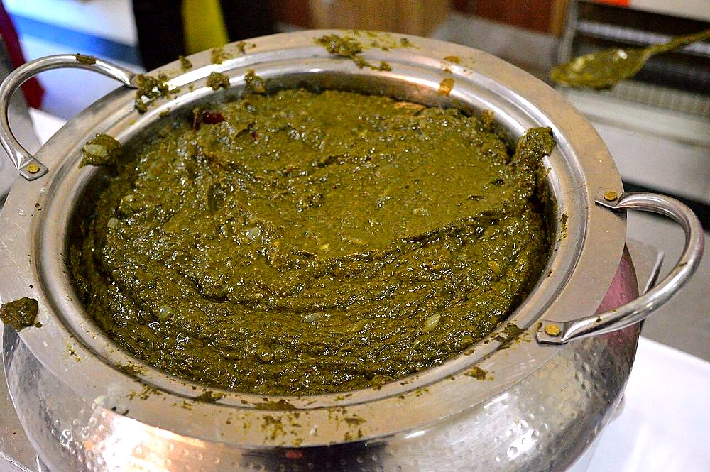

Sarson ka Saag
slow-cooked mustard greens, bitter and buttery, thickened with a little coarse flour

Contains: milk, mustard
Ingredients
Quantities for 4.
- 750g, thick stalks removed and leaves roughly chopped Mustard Greens
- 250g, chopped Spinachsoftens the bitterness of the mustard
- 1 small bunch (100g), chopped Methi Leavesfor a bitter edgeoptional
- 3 tbsp Maize Flourstirred in at the end to thicken the saag
- 2 inch, half chopped and half julienned Ginger
- 10 cloves, chopped Garlic
- 3, chopped Green Chilli
- 1 large (150g), finely chopped Onionfor the final tempering
- 3 tbsp Ghee
- 20g Butterto finishoptional
- to taste Salt
- 1.5 cups Water
Cookware
stovetop, pressure cooker, blender
Checked against the ingredient list for ten allergens: milk, egg, fish, crustaceans, tree nuts, peanuts, sesame, mustard, soy and gluten. Brands vary, so read the label on anything new to you.
Before you start
- Wash the greens in three changes of water. Mustard leaves hold a lot of grit in the crinkles.
- Strip the leaves off any stalk thicker than a pencil; those stalks stay stringy however long you cook them.
- Mix the flour with 4 tbsp cold water to a smooth slurry before it goes near the pot, or it will go lumpy.
Method
- Put the mustard greens, spinach, methi, chopped ginger, garlic, green chillies, 1 tsp salt and 1.5 cups water in the pressure cooker and cook 15 minutes at full pressure.
- Let the pressure drop, then uncover. The greens should be army-green and completely collapsed.
- Blend to a coarse puree, or crush with a wooden masher for the traditional rough texture.Do not blend it smooth. Saag should have a slight grain to it.
- Return the puree to the pan and bring to a bare simmer.
- Whisk in the flour slurry in a thin stream and cook 25 minutes on low, stirring every few minutes.This long simmer is what turns raw bitterness into something round and sweet. Do not shorten it.
- Meanwhile heat the ghee in a small pan and fry the chopped onion until golden brown, about 8 minutes.
- Add the julienned ginger to the onion and fry 1 minute more.
- Pour the tempering into the saag, scraping the pan clean, and simmer 10 minutes more.
- Taste for salt (greens need more than you expect) and finish with the butter melting on top.
Storage
Keeps 4 days refrigerated and genuinely improves for the first two. Reheat slowly with a splash of water and fresh butter. Freezes 3 months.
Nutrition Medium estimate
Medium protein: 15 g a serving, 18% of the calories
| Per serving417 g | Per 100 g | |
|---|---|---|
| Calories | 334 kcal | 81 kcal |
| Protein | 14.7 g | 4 g |
| Carbohydrate | 40.6 g | 10 g |
| of which sugars | 4.7 g | 1 g |
| Fibre | 15.2 g | 4 g |
| Fat | 16.8 g | 4 g |
| of which saturated | 9.0 g | 2 g |
| of which unsaturated | 5.0 g | 1 g |
Ingredients given to taste count as zero, so the real figures run a little higher. Nearest database match used for methi leaves. Estimated from raw ingredients using USDA FoodData Central.
More like this: Vegetarian Indian recipes · Gluten-free Indian recipes · Punjabi recipes
Times, yields, allergens and nutrition are guidance. Use your own judgement on doneness and on storing. More in About.